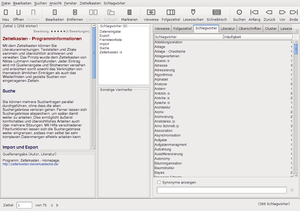

Zettelkasten
Dieser Artikel wurde für die folgenden Ubuntu-Versionen getestet:
Ubuntu 16.04 Xenial Xerus
Ubuntu 14.04 Trusty Tahr
Zum Verständnis dieses Artikels sind folgende Seiten hilfreich:
Wie kann man Ideen, Informationen, Notizen, Zitate und weitere Wissensbestandteile sinnvoll speichern und verwalten, um sie im Bedarfsfall schnell, einfach und strukturiert durchsuchen, abrufen und weiterverarbeiten zu können? Zettelkästen in Form analoger Karteikartensysteme oder mittels spezieller Softwareprogramme dienen dem Zweck, Informationen und eigene Notizen nach bestimmten Kategorien, Themengebieten, Projekten oder anderen Kriterien aufzubewahren. Von längeren Texten (Notizbüchern) unterscheiden sie sich durch die Möglichkeit zur Verschlagwortung (Tagging) und Querverweisen (Hypertext).
Laut eigener Beschreibung ist der elektronische Zettelkasten nach Luhmann  dazu bestimmt, Notizen und Exzerpte aus verschiedenen Quellen sammelnd zu verknüpfen, um diese später gedanklich neu ordnen zu können. Inspiriert wurde das Programm vom Soziologen Niklas Luhmann, dessen legendärer Zettelkasten aus Holz und Papier mehr wusste als er selbst.
dazu bestimmt, Notizen und Exzerpte aus verschiedenen Quellen sammelnd zu verknüpfen, um diese später gedanklich neu ordnen zu können. Inspiriert wurde das Programm vom Soziologen Niklas Luhmann, dessen legendärer Zettelkasten aus Holz und Papier mehr wusste als er selbst.
Der elektronische Zettelkasten nach Luhmann ist in Java programmiert, daher plattformübergreifend verwendbar und unter der GNU GPLv3 lizenziert. Besonders interessant sind die verschiedenen automatischen und manuellen Verknüpfungsmöglichkeiten, durch die sich das Programm von einfachen Gliederungseditoren (Outlinern) abhebt.
Hinweis:
Grundlage dieses Artikels ist die Version 3.x
Voraussetzungen¶
 Wie man eine Laufzeitumgebung (JRE) ab Version 6 installiert, ist im Artikel Java/Installation beschrieben. Bei vereinzelt auftretenden Problemen mit dem OpenJDK empfiehlt der Programmautor Daniel Lüdecke die Verwendung von Oracle Java, das auch zur Entwicklung des Programms genutzt wird.
Wie man eine Laufzeitumgebung (JRE) ab Version 6 installiert, ist im Artikel Java/Installation beschrieben. Bei vereinzelt auftretenden Problemen mit dem OpenJDK empfiehlt der Programmautor Daniel Lüdecke die Verwendung von Oracle Java, das auch zur Entwicklung des Programms genutzt wird.
Installation¶
 Das Programm ist nicht in den offiziellen Paketquellen vorhanden, kann aber über die Homepage als Archivdatei Zettelkasten3_linux.zip
Das Programm ist nicht in den offiziellen Paketquellen vorhanden, kann aber über die Homepage als Archivdatei Zettelkasten3_linux.zip  heruntergeladen werden.
heruntergeladen werden.
Nach dem Entpacken [1] kann das Programm mit folgendem Befehl in einem Terminal-Fenster [2] gestartet werden:
java -jar Zettelkasten.jar
Bei Bedarf kann man sich einen Programmstarter [3] erstellen, der auch als Anwendungsmenü-Eintrag dient (Speicherort und Symboldatei noch anpassen):
[Desktop Entry] Name=Zettelkasten Comment[de]=Zettelkasten nach Luhmann Exec=java -jar /home/BENUTZERNAME/bin/Zettelkasten.jar Icon=/home/BENUTZERNAME/Bilder/zettelkasten.jpg Terminal=false Type=Application Categories=Office;Education; StartupNotify=false
Für eine systemweite Nutzung kann man die .jar-Datei mit Root-Rechten in das /opt-Verzeichnis kopieren.
Verwendung¶

Leider ist die empfehlenswerte Original-Dokumentation Erste Schritte - Für Neueinsteiger , die die Verwendung des Programms ausführlich beschrieb, inzwischen nicht mehr verfügbar. Für Fragen zum Programm stehen jedoch Video-Anleitungen, ein Forum und im begrenzten Umfang der Programmautor via GitHub zur Verfügung (siehe Links).
Zusätzlich kann die Beispieldatei zkn3_sample.zip weiterhelfen, die vor der Verwendung aber noch entpackt [1] werden muss. Enthalten sind 75 Zettel, die genutzt werden können, um die Programmfunktionen auszuprobieren.
Zum Speichern werden ab Version 3 .zkn3-Dateien im XML-Format verwendet. Die zuletzt verwendete Datei wird beim Programmstart automatisch geladen. Einstellungen, Synonym-, Autokorrektur- und Fremdwortlisten landen im versteckten Ordner ~/.Zettelkasten/ im Homeverzeichnis.
Querverweise¶
Wie bereits oben erwähnt, sind die zahlreichen Möglichkeiten zur Erstellung von Querverweisen (Hyperlinks) eine besondere Stärke des Programms. Über verschiedene Reiter stehen zur Auswahl:
Verweise
Folgezettel
Schlagwörter
Literatur
Überschriften
Cluster
Lesezeichen
Anhänge
Literaturverwaltung¶
Der Zettelkasten bietet eine BibTeX-Schnittstelle an, die eine „Zusammenarbeit“ mit Literaturverwaltungsprogrammen ermöglicht und kann auf bestehende BibTex-Dateien zurückgreifen. Damit lassen sich Literaturangaben aus den Programmen Zotero, Endnote, Bibliographix, Citavi, Refworks, JabRef und anderen importieren und werden im Zettelkasten automatisch mit den entsprechenden BibKeys versehen. Praktische Hinweise liefert der Blogbeitrag Vom Zettel zum Text (06/2011).
Problembehebung¶
Arbeitsspeicher¶
Sollte der Zettelkasten bei längerer Verwendung langsamer werden oder gar abstürzen, kann es hilfreich sein, mehr Speicher für Java zur Verfügung zu stellen. Dies geschieht mit den beiden Parametern -Xms<initial heap size> und -Xmx<maximum heap size>. Hier ein Beispiel, das 128 MiB (statt 64 MiB) initialen Speicher reserviert und auf maximal 1024 MiB begrenzt:
java -Xms128m -Xmx1024m -jar /PFAD/ZUR/Zettelkasten.jar
Diese Beispielwerte sind an die individuellen Gegebenheiten anzupassen.
Einstellungen zurücksetzen¶
Sollte sich das Programm nicht mehr starten lassen, kann man die Einstellungen im Ordner ~/.Zettelkasten/ zurücksetzen. Dazu wird dieser Ordner entweder gelöscht oder umbenannt. Damit werden die Standard-Einstellungen des Programms wieder aktiv.
Verknüpfung mit Datendateien erstellen¶
Immer wieder geäußert wird der Wunsch, erstellte Zettelkasten-Dateien per Doppelklick öffnen zu können. Dies ist leider nicht möglich. Stattdessen wird empfohlen, den Menüpunkt "Datei -> Benutzte Zettelkästen" zu nutzen, um vorhandene Zettelkästen zu öffnen.
Links¶
Forum
bei YahooZettelkasten auf SourceForge
Literaturverwaltung
 Übersichtsartikel
ÜbersichtsartikelNotizen
Übersichtsartikel

- Erstellt mit Inyoka
-
 2004 – 2017 ubuntuusers.de • Einige Rechte vorbehalten
2004 – 2017 ubuntuusers.de • Einige Rechte vorbehalten
Lizenz • Kontakt • Datenschutz • Impressum • Serverstatus -
Serverhousing gespendet von